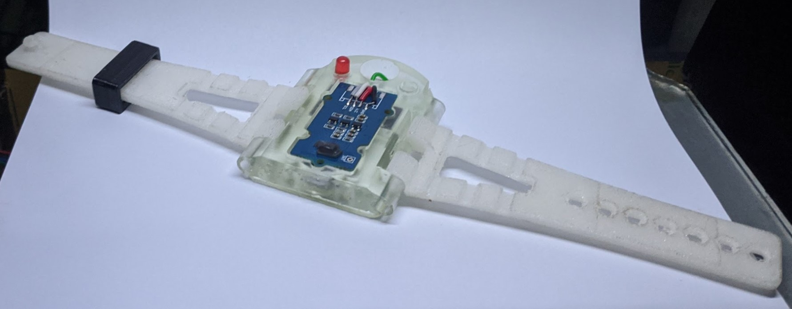
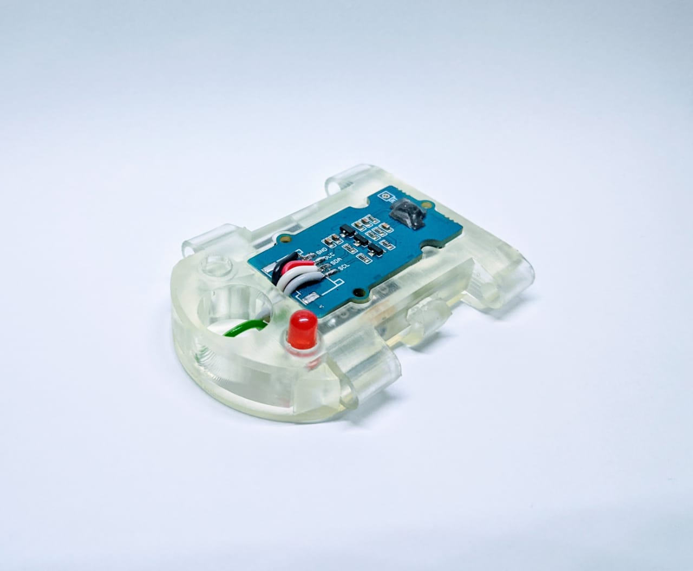
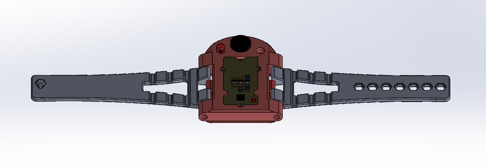
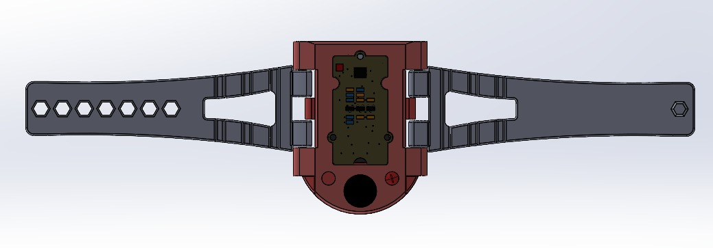
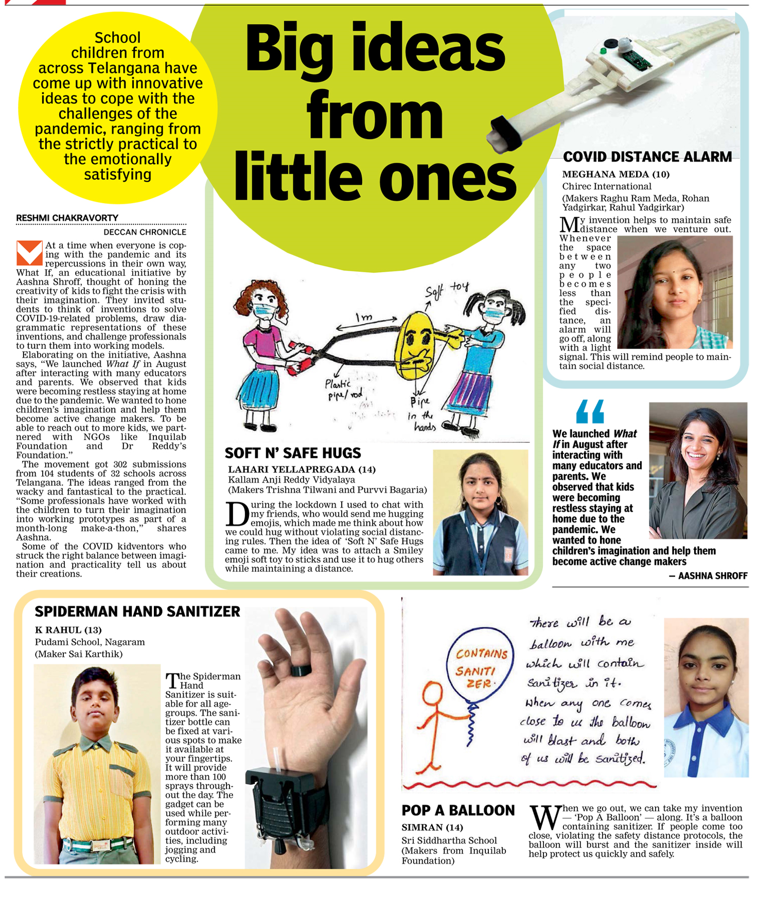

COVID Distance Alarm Watch
I saw an Instagram post by T-Works in which they were going to host a make-athon. Basically, a kid who is younger than 15 years old gives makers and enthusiasts an idea.
The perks of participation got me. I saw that they were offering 2 months of free prototyping service, which they usually charged, so it was a win-win for me. I will later use their service for laser cutting my MDF for a Mini-Mill I will build.
My brother and I liked a couple of ideas and later settled for this COVID Distance Alarm idea. We also wanted to see how good SLA prints are. We got the case printed from resin. The strap was made using TPU, and all of these parts were 3D printed.




Everyone likes my watch design so I got featured in the news cover.
